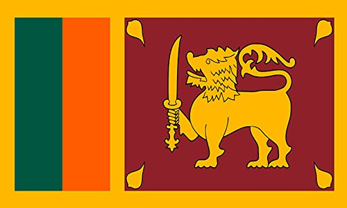
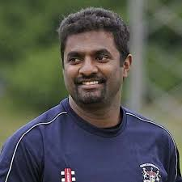
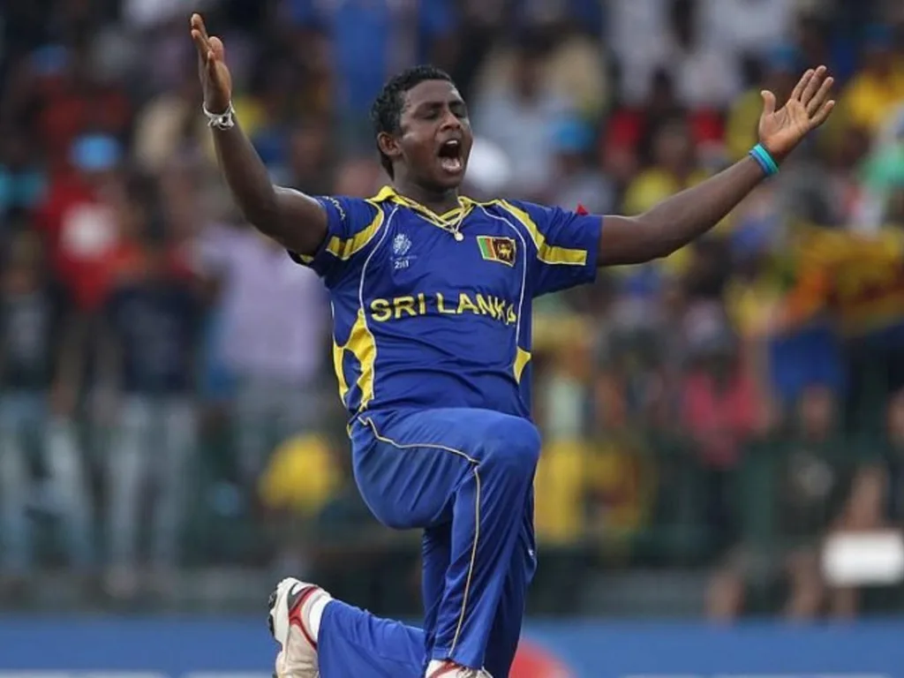
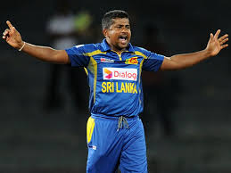

Click on the ICC below to go back to the Homepage

 |
History |
70s and before |
Venues |
Sri lankan has many stadiums like Premadasa stdium in the capital which hosted many world cup games Galle international stadium which was rebuilt after the 2004 tsunami Sinhalese sport club ground which was a great historic |
world records |
Sri Lanka has an impressive array of cricket world records. Here are some notable ones: Highest Team Total in Test Cricket: Sri Lanka holds the record for the highest team total in Test cricket, scoring 952/6 declared against India in 19971. Highest Partnership in Test Cricket: Mahela Jayawardene and Kumar Sangakkara set the record for the highest partnership in Test cricket with 624 runs against South Africa in 20061. Most Wickets in Test Cricket: Muttiah Muralitharan holds the world record for the most wickets in Test cricket, with 800 wickets1. Highest Individual Score by a Sri Lankan in Test Cricket: Mahela Jayawardene scored 374 runs against South Africa in 2006, which is the highest individual score by a Sri Lankan and the fourth-highest in Test cricket history1. Most Runs in Test Cricket for Sri Lanka: Kumar Sangakkara has scored the most runs for Sri Lanka in Test cricket, with over 12,000 runs |
What place did they get in every world cup(odi) |
1975: Group Stage 1975: Group Stage 1979: Group Stage 1983: Group Stage 1987: Group Stage 1992: Group Stage 1996: Winners 1999: Group Stage 2003: Semi-Finals 2007: Runners-up 2011: Runners-up 2015: Quarter-Finals 2019: Group Stage |

Muttiah Muralitharan is one of cricket's greatest bowlers, holding the record for the most wickets in Test cricket with 800 wickets. Known for his unique bowling action and exceptional spin, he was a key player for Sri Lanka. Muralitharan's career spanned from 1992 to 2010
 Lasith Malinga
Lasith Malinga
Lasith Malinga, known for his distinctive round-arm action, is one of the greatest limited-overs bowlers. He has taken over 300 wickets in ODIs and is famous for his deadly yorkers. Malinga is the only bowler to have taken four wickets in four consecutive balls in international cricket

Ajantha MendisAjantha Mendis, known as the "mystery spinner," gained fame for his unique bowling style and variations. He holds the record for the fastest 50 wickets in ODIs and took six wickets for eight runs in a T20I against Zimbabwe. Mendis played a key role in Sri Lanka's 2014 ICC World Twenty20 victory. Despite challenges later in his career, his impact on limited-overs cricket remains significant

Rangana HerathRangana Herath is a former Sri Lankan cricketer and one of the most successful left-arm spinners in Test cricket history. He played for Sri Lanka from 1999 to 2018, taking 433 Test wickets1. Herath is known for his accuracy, ability to bowl long spells, and subtle variations in pace and flight
 Sanath Jayasuriya
Sanath Jayasuriya
Sanath Jayasuriya is a legendary Sri Lankan cricketer known for his explosive batting and effective left-arm spin bowling. He played a pivotal role in Sri Lanka's 1996 World Cup victory and revolutionized the role of an opening batsman with his aggressive style1. Jayasuriya scored over 13,000 runs in ODIs and took more than 300 wickets
 Kumar Sangakkara
Kumar Sangakkara
Kumar Sangakkara is one of Sri Lanka's greatest cricketers, known for his elegant batting and consistency. He scored over 12,000 runs in both Tests and ODIs, and served as the team's captain. Sangakkara played a key role in Sri Lanka's success in international tournaments
 Mahela Jayawardene
Mahela Jayawardene
Mahela Jayawardene is one of Sri Lanka's greatest batsmen, scoring over 11,000 runs in both Tests and ODIs. He holds the record for the highest partnership in Test cricket with Kumar Sangakkara, scoring 624 runs. Jayawardene captained Sri Lanka to the 2007 World Cup final and played a key role in their 2014 ICC World Twenty20 victory